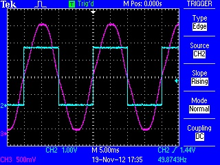
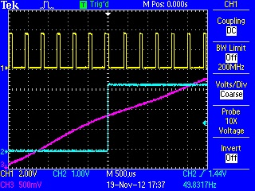
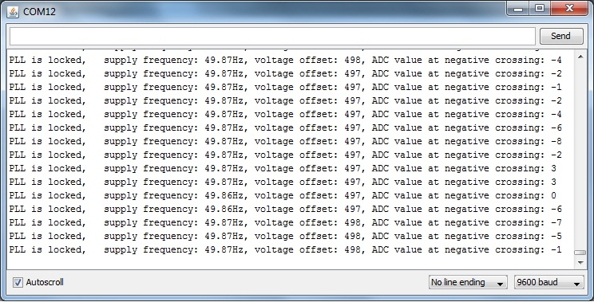

I'm in the process of modifying my 3-phase monitor to sample current and voltage continuously using timer interrupts. It was pretty easy to do but it occurred to me that it would be nice if the interrupts were locked to the 50Hz supply so I set about writing a software phase-locked loop to lock the timer interrupt to zero-crossings of the a/c input and here's the result...

The blue(ish) trace is output of the timer and the other trace is the a/c input.
This one shows the individual sample points, in this case I've chosen to sample each cycle 50 times...

The width of the yellow pulses shows how long is spent in the timer interrupt.
And here's the sketch output...

There's a couple of nice benefits of this approach, the waveform is sampled in exactly the same place for each cycle so the results are very consistent, the zero crossings (or any other point in the waveform) are known precisely - which is ideal for triggering triacs etc and you can accurately determine the supply frequency (ok, not sure if that's a benefit but it's fun to measure it!)
Here's the sketch if anyone wants to try it...
http://openenergymonitor.org/emon/sites/default/files/phase_lock_50hz.ino
[The fully developed sketch is at http://openenergymonitor.org/emon/node/1535]
Re: Phase-locking emonTx to the 50Hz supply
I agree, this is a very nice way to go because the readings are always at uniform intervals during each mains cycle, and will always start and finish very close to the zero crossing. No other system used on this site has these attributes.
Also, you can output data to an LCD as done by Stuart Pittaway, here http://openenergymonitor.org/emon/node/1002 (in case you had not seen it).
I am working on something similar.